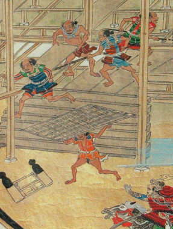
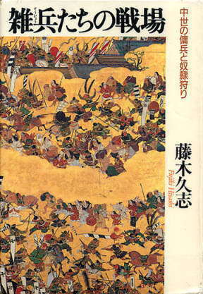

| 見たい項目をクリックして下さい | |||||||||
|
| 会員からの投稿（詳細-１１） |
| 江戸時代散策① 農民の自力救済 |
|
| 地方文書を共に学ぶ皆さん、近世（江戸時代）の実像は、想像どおりでしたか？ 文書をめぐっての井上講師のお話もビビッドで内容豊か、我々の江戸時代に対する眼を大きく開かせてくださいます。しかし時間が限られていることもあって、後一歩というところで、本来の文書を読む作業に戻ることも度々です。 そこで私が、横から少々お手伝いさせていただこうかという、不遜な考えを起こしました。井上先生、もし誤りや今は古い説を紹介していたら、遠慮なく ご訂正ください。 では、前置きはこれくらいにして。 |
|
江戸時代の農民は、領主(幕府・旗本・大名など)から、「生かさぬよう、殺さぬよう」ギリギリまで搾取され、やっと生きていた、そんなイメージはありませんか。我々初期の六三制の学校で戦後教育を受けた人間は、そう教えられました。
ところが、なかなかどうして、彼等はしぶとく生きていたのです。
井上講師が前回の講義で触れた藤木久志立教教授の『戦国の村を行く』には、時代は少々前になりますが、そんな農民の姿が生き生きと描かれます。
黒澤明監督の映画『七人の侍』に出てくるような武装した盗賊は、「悪党」などと呼ばれ、珍しい存在ではありませんでした。いや、悪党ばかりではありません。八木（米のこと、昔の文書ではこう書かれることも多い。理由は考えてください）や麦、銭、あるいは牛馬、人間を狙って襲ってくるのは、近隣の中小土豪や大寺院がかかえる僧兵、本来は領民を守るはずの守護の配下まで、隙あらばと虎視たんたんです。
ところが、村人達も負けてはいません。この日あるを予想して、近くの村々と手を組んでいます。敵が近づくと早鐘を打ったり、狼煙を上げたり、早馬を走らせて急報します。戦力にならない女子供老人は山中に隠します。相手が弱そうだと、村の若衆は手に手に刀や鑓（やり）、弓矢、時に鉄砲を持って集まり、敵を防ぎます。
相手が強そうだと見ると、若衆も山へ逃げ込んでしまいます。藤木さんは、村人の最後の砦、村城の存在を推定しています。この村城で一戦交えることもあります。そのときに最も役立つ武器は何でしょう。皆さんには多分想像できないでしょう。
実は、鉄砲が普及するまでは、礫が最も効果的な武器だったのです。少年講談を読んで育った世代は、弓の名人鎮西八郎為朝の郎等に「八丁礫の紀平次」という礫打ちの名人がいたことを覚えています。礫は正規の武士も盛んに利用し、戦国時代末まで効果ある武器として使用されました。話が横道にそれてしまいました。横道ついでのお話を一つ。
運悪く悪党などに捕えられた村人が道案内を強制されると、行き止まりの道へ案内して逃げ出したり、普段から水争いや入会で争いをしている村に案内することもあったといいます。
地方の博物館や資料館で、「甲乙人濫妨狼藉停止のこと」などと書いた高札を見たことがありませんか。一見、占領した軍勢の大将が、占領地の村人の心を捉えるために出したようにも見えますが、実は、これは村人が多額の金を出して、書いてもらうことが多いといいます。 「地獄の沙汰も金次第」などと言いますネ。
二つの勢力にはさまれた村では、年貢は両方に半分ずつ納めたなど、話は尽きませんが、その前に紙数が尽きました。
《蛇足》藤木さんの本は、その前に書いた『雑兵たちの戦場』（朝日新聞社）のほうが、面白い。
|
 | |
| 略奪する悪党 （真如堂縁起より） | ||
|  | ||
| 雑兵たちの戦場 藤木久志著 朝日新聞社 |
||
| 投稿の一覧表 に戻る |